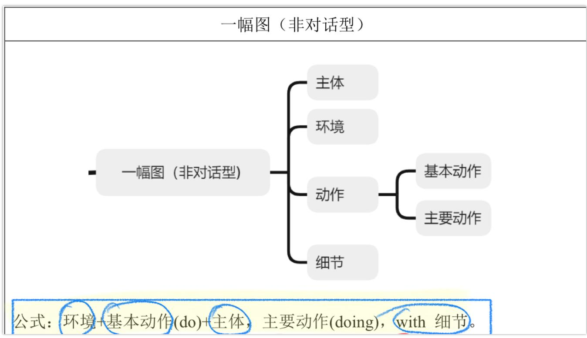
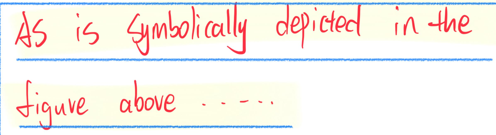
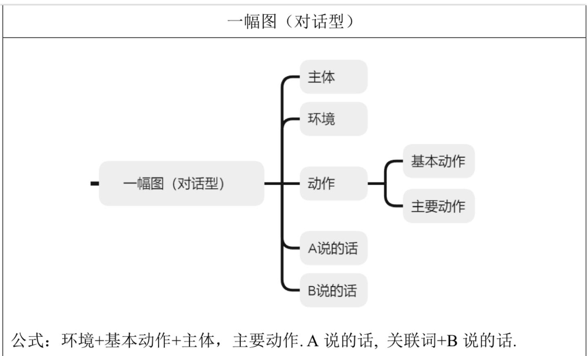
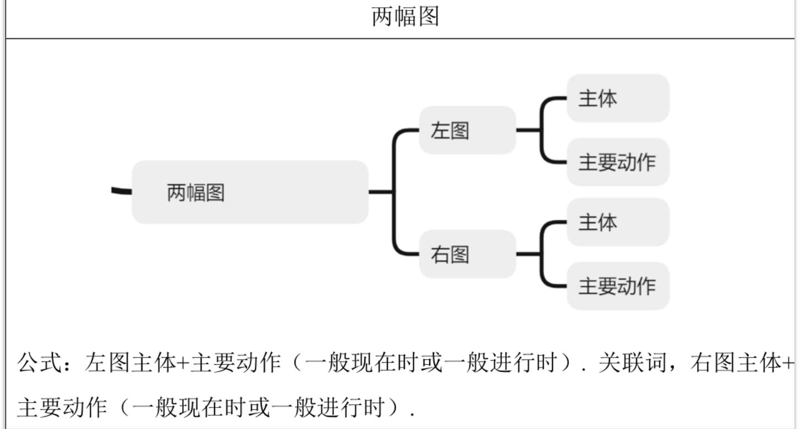

大作文模版
一幅图无对话

depicted

正如上面的图片中象征性抽的那样.
| 正面 | 负面 | |
| lovely as well as cute | cruel as well as vicious | |
| 可爱的 | 残忍又恶毒的 | |
| graceful as well as elegant | negative as well as passive | |
| 优雅的 | 消极又被动的 | |
| amiable as well as friendly | disgraceful as well as dishonorable | |
| 友好的 | 不光彩又可耻的 | |
| aspiring as well as ambitious | ugly as well as disgusting | |
| 有抱负又有野心的 | 丑陋又恶心的 | |
| active as well as vigorous | terrible as well as horrible | |
| 活跃又有精力的passionate as well as aggressive激情又有进取心的confident as well as optimistic自信的又乐观的 | 可怕的unconfident as well as pessimistic不自信又悲观的 | |
一幅图有对话

- 两幅图
